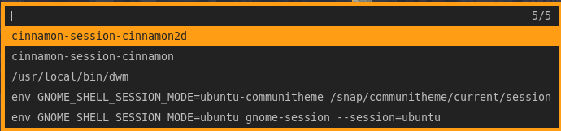
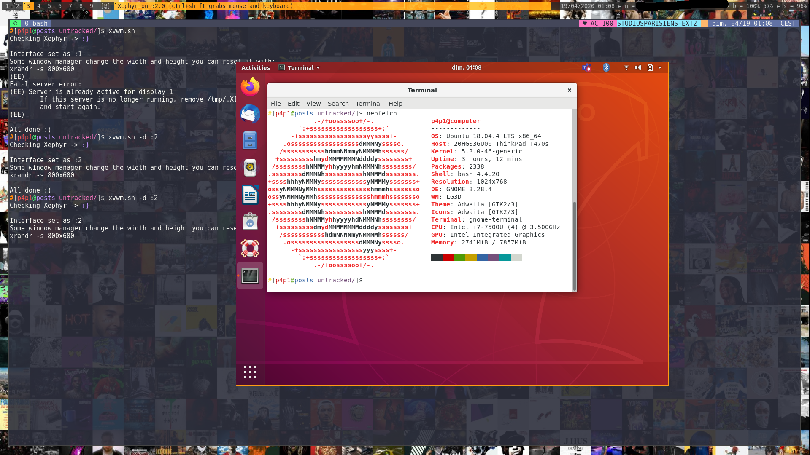
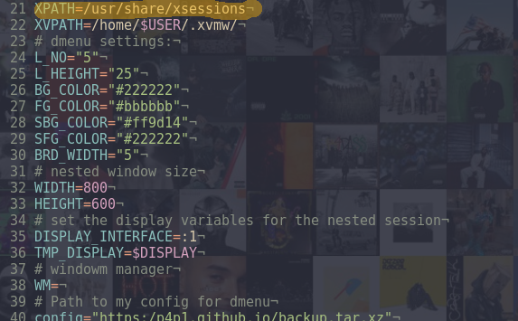
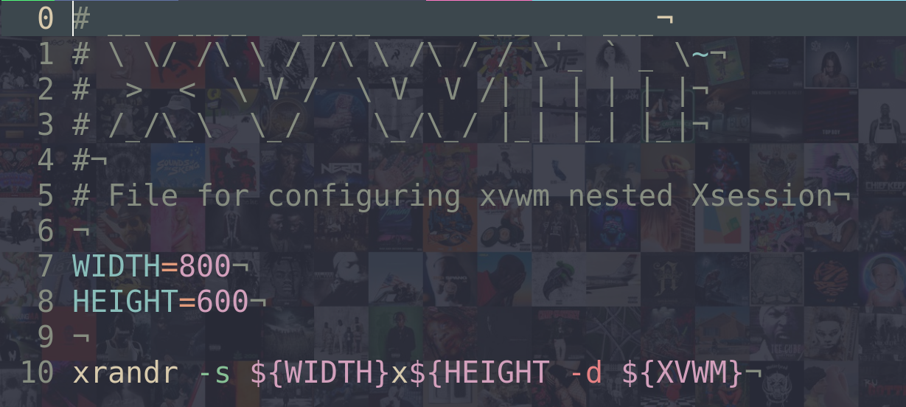

xvwm.sh
by Leo Smith / p4p1
Created on sun. 19 April 2020 01:32:40
Today I created a simple script to create Xephyr sessions so that I can dynamically test different window managers on the fly,
Installation
To be able to install xvwm.sh you will need a few dependencies:
sudo apt install libx11-dev libxinerama-dev libxft-dev build-essential xserver-xephyr
The xvwm.sh script will also have to install a last dependence that is a custom version of dmenu for picking the different window managers that are available.
Welcome to ./xvwm.sh this is your first install...
creating path in /home/p4p1/.xvwm/
installing custom dmenu...
% Total % Received % Xferd Average Speed Time Time Time Current
Dload Upload Total Spent Left Speed
100 90.2M 100 90.2M 0 0 4131k 0 0:00:22 0:00:22 --:--:-- 4330k
make: Entering directory '/tmp/backup/.source/dmenu-4.9'
[ Compiling ... ]
make: Leaving directory '/tmp/backup/.source/dmenu-4.9'
After its first run you can copy the xvwm.sh script inside of /usr/bin to have it as a script on your system if you want. To do this you can just run the script with -i:
$ sudo ./xvwm.sh -i
Usage
This script by default when run will prompt you with the different window managers that it found on the system.
From here you can select the window manager you want to open and it should open in the Xephyr window.
Configure
If you wish to customize where the xsession folder is you just need to modify this line of code by the path on your machine:
This is the variable where the script searches for the .desktop files where it extracts all of the paths for each window manager.
Also, you can modify startup commands for your xsessions by adding the following code to your .bashrc:
[ ! -z "$XVWM" ] && source ~/.xvwm/xvwm.bash
And modifying the file ~/.xvwm/xvwm.bash, by default it should look something like this:
The command xrandr is used to force the nested xsession window to have a certain width and height.
Thank you for reading follow me on Github and check out the other posts on this blog for more stuff like this.